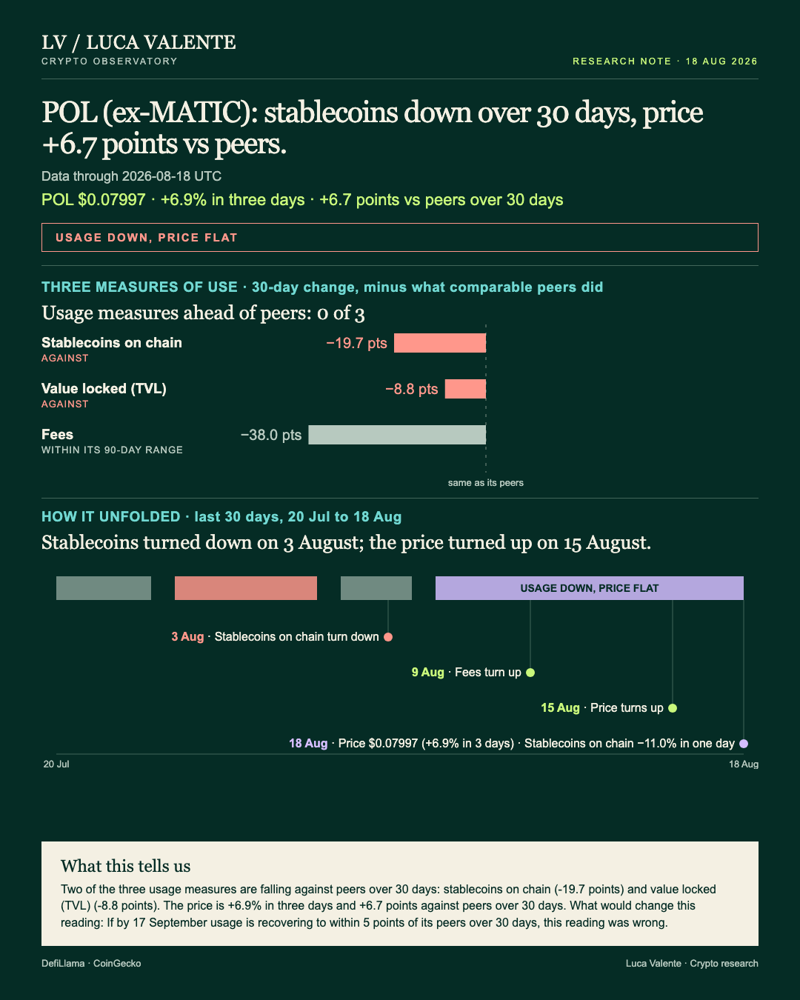
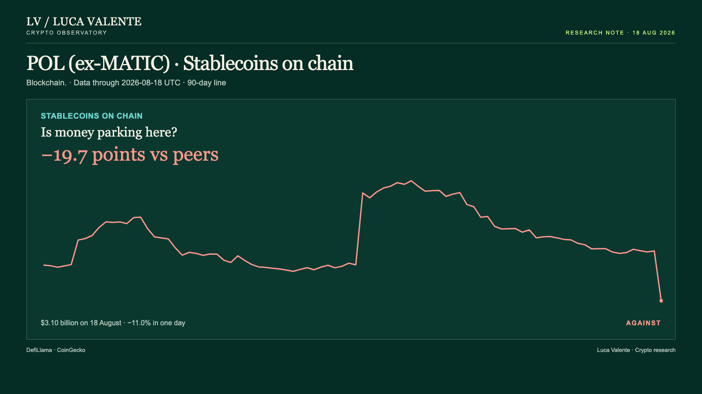
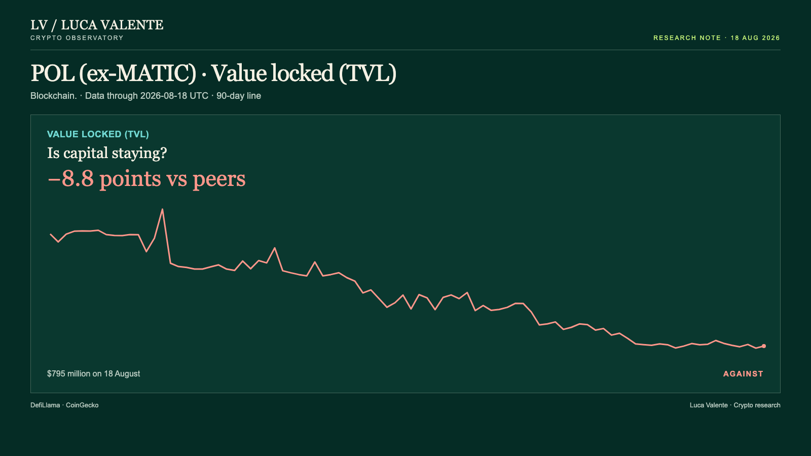

Training note, written on 23 September 2026 from data as of 18 August 2026. Not part of the published series.
Since 3 August, Polygon's Stablecoins Fell On 12 Of 16 Days

A single loud trading day sits on top of a month that otherwise looks flat, and Polygon's usage lines moved the other way underneath it. That gap matters to anyone judging this network by its headline price move alone.
POL is the token of the Polygon network, the blockchain that used to trade under the name MATIC. These figures stop on 18 August 2026, with 30-day comparisons spanning 20 July to that date. The comparison set is one group of 37 blockchains, though each measure lines up only against however many report it: 34 for fees, 33 for stablecoins, 36 for value locked. The cover puts it plainly: none of the three usage lines are ahead of their peers this month.
People paid $63,414 in fees on 18 August, the daily charge for using the network. Over the last 30 days that figure is down 27.9%, while the median blockchain among the 34 that report fees gained 10.1% in the same stretch. Net of the group, Polygon sits 38.0 points behind.
Money parked in stablecoins on the network stood at $3.10 billion on 18 August, after falling 11.0% in a single day. Across 30 days the line is down 21.0%. The 33 blockchains that report the same figure had a median move of just -1.3%, which puts Polygon 19.7 points behind.

Inside Polygon's applications, $795 million sat locked on 18 August, up 0.8% from the day before. Over 30 days that figure dropped 14.8%, against a median of -6.0% among the 36 blockchains that report the same number, an 8.8-point gap net of the group.

Order the moves by when each line turned. Stablecoins tipped down on 3 August, falling on 12 of the 16 days since; fees turned up on 9 August, rising on 6 of the next 10. Value locked flipped down on 13 August, falling on 4 of the 6 days after; the price turned up on 15 August, rising on 3 of the following 4. It closed at $0.07997 on 18 August, up 6.9% on the day, the same size as its three-day move, while the 30-day change is a much smaller -1.3%, 6.7 points ahead of the median of -8.0% among the 33 blockchains with a listed price.
Read the price alone and you would miss the number that doesn't fit: a month that reads flat on price, -1.3% over 30 days, holds a single day worth +6.9%. Everything else still points the same way, all three usage lines behind their peers over 30 days, which reads more like a slide than a turn. Which would you trust more: a price that jumped once, or two measures that have fallen on most days since they turned down?
Drops in stablecoins this size aren't unique to Polygon. Since September 2025, 22 other blockchains in the same group have each had at least one one-day fall this big or bigger, 109 episodes in all. Polygon itself has had exactly one before this, on 2 October 2025, and that time the level came back at or above the day-of-the-drop level, both a week and a month later. Of the 109 episodes elsewhere, two are too recent for a 30-day result; of the 107 that do, 53 were back at or above the day-of-the-drop level a month out, and 60 of the 109 a week out.
None of this comes with a reason. These figures carry no news and no announcement for any of it, so any explanation would be a guess, not something in front of me. There's no measure of users or wallets either, just fees, stablecoins on chain, and value locked; nothing on trading volume, Layer 2 transactions, or developer commits for Polygon shows up here. Everything above stops on 18 August 2026; nothing after that date is part of this reading.
Which single number would flip this call? If by 17 September usage is recovering to within 5 points of its peers over 30 days, this reading was wrong.
I'm treating the one-day price pop as noise sitting on top of a slide that hasn't stopped.
Sources: DefiLlama, CoinGecko.
Peer group: 37 chains tracked by DefiLlama (who they are). 'Net of the group' is the 30-day change minus the group's median.
Not financial advice. This is a research note based on public on-chain data.